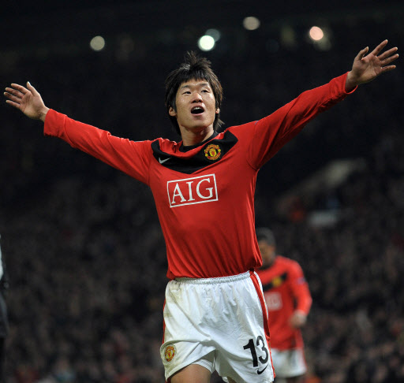

박지성은 전 축구선수이자 현 축구행정가이며 대한민국 최초의 프리미어리거이다.
2000년 일본 쿄토 퍼플상가에서 프로로 데뷔한 이후, 네덜란드 PSV에인트 호번, 잉글랜드 맨체스터 유나이티드 FC
, 퀸즈파크 레인저스 FC에서 활양하였다. 이후 2014년 PSV로 돌아와 1년을 뛰고, 무릎 부상 여파로 비교적 이른 나이에
은퇴하였다. 국가대표로서는 2002년 월드컵 주전 멤버부터 2010 남아공 월드컵 주장 등 까지 활약했다. 은퇴 이후엔
JS파운데이션 이사장, 맨체스터 유나이티드 FC 구단 앰버서더 등으로 다년간 활동하였고, 2021년 부터는 K리그
전북 현대 모터스 구단의 어드바이저로 활동중이다.